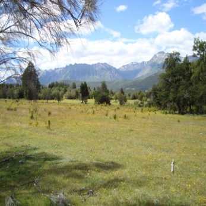
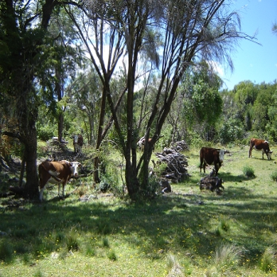

Un problema es una
cuestión que requiere de una solución, y una
solución se trata de la acción y efecto de resolver una
dificultad.
Un problema es una
dificultad, y en nuestro ejemplo se trata de como captar la
complejidad de los sistemas forestales a escala predial, con la
finalidad de realizar un Manejo Forestal Sustentable
(MFS).
Los sistemas
productivos rurales y en particular aquellos de zonas boscosas,
pueden afectar la condición natural de un predio en el
término del mediano y largo plazo, por la acumulación de
efectos en el tiempo.
Cuando se
implementan nuevas actividades, o se intensifican otras, en un
principio pueden no observarse efectos adversos notables. Pero a
veces ocurren interacciones con otros factores que producen que las
respuestas de los sistemas puedan amplificarse más allá
de lo previsible u observado con anteriodidad.
|

|
Pastizal. Foto:
gentileza de V. Rusch
|
A menudo como
profesionales de la actividad agro-forestal nos vemos enfrentados a
situaciones complejas, donde se debe decidir o recomendar
actividades a desarrollar en un predio, la forma de implementarlo,
contemplando las legislaciones vigentes.
Sintéticamente
puede decirse que el MFS debe mantener y conservar la capacidad
productiva del sistema, el bienestar de las comunidades asociadas,
incluyendo la producción de bienes derivados de la unidad de
manejo; y la integridad de los ecosistemas y los servicios
ecosistémicos que de la misma se derivan.
|

|
Bosque Ralo. Foto:
gentileza de V. Rusch
|
Existen muchas
iniciativas para resolver y mejorar la economía y
producción de predios rurales. Sin embargo a menudo vemos que
los esfuerzos realizados no producen los objetivos deseados o es
complejo su abordaje.
Como sucede? Por
que tantos y tan bien intencionados esfuerzos para mejorar los
resultados, y pensados por gente inteligente, a menudo no brindan
los resultados esperados?
El primer paso en
"arreglar" cualquier cosa, es entender por que se "rompió". A
veces nuestras iniciativas de mejorar los resultados muy a menudo
duran poco, y un buen lugar donde comenzar a mirar el "porque" es
en el proceso por el cuál estas iniciativas comienzan a ser o
plasmarse.
Estas iniciativas
surgen de nuestro proceso de pensamiento. Por lo que es necesario
mirar de cerca este proceso. Lo primero que hay que tener en cuenta
sobre el pensamiento es que cuando reflexionamos sobre algo, en
realidad estamos trabajando con un modelo mental o conceptual, que
podríamos decir que es una abstracción selectiva de la
realidad acerca de la cuál estamos analizando o
reflexionando.
Hemos construido
ciertos supuestos acerca de como es la realidad (y funciona), y
también de ciertos supuestos específicos acerca de partes
en particular de la realidad acerca de la que estamos pensando. Sin
embargo estos modelos no son declarados, por ello el primer paso es
explicitarlos, para luego evaluarlos.